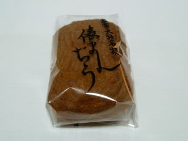

出雲大社名物 俵まんぢう
2010/11/27
「まんじゅう」じゃなくて「まんぢう」なんですよね。
観光地のお土産商品なイメージなので、出雲市に住んでいると貰うことってないと思うんですが、意外と食べる機会があります。
人気があるんですね。

まんじゅうの中には、砂糖たっぷりの白あんが入っていて、素朴な味がしました。
素朴感がきっといいんでしょうね。
島根県出雲市浜町砂子田543-1
2010/11/27
「まんじゅう」じゃなくて「まんぢう」なんですよね。
観光地のお土産商品なイメージなので、出雲市に住んでいると貰うことってないと思うんですが、意外と食べる機会があります。
人気があるんですね。

まんじゅうの中には、砂糖たっぷりの白あんが入っていて、素朴な味がしました。
素朴感がきっといいんでしょうね。